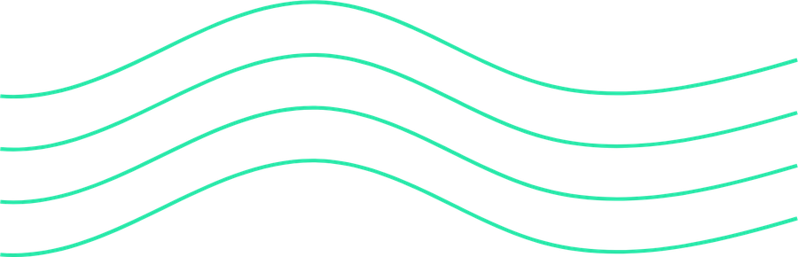

Pontos a investigar
Onde o atendimento costuma travar
São pontos que olhamos no diagnóstico. Não são acusações: cada clínica tem a sua realidade.
Primeira resposta
O tempo até o primeiro contato ser respondido.
Condução da conversa
A falta de um padrão para levar o interesse até o próximo passo.
Acompanhamento
Contatos interessados que param de responder e não recebem retorno.
Controle
Pouca visão de quantos chegaram, quantos foram atendidos e quantos agendaram.
O que fazemos
Do primeiro contato ao horário marcado
Não somos agência (sem tráfego pago ou gestão de redes sociais) e não somos chatbot: o atendimento é humano.

Como funciona
Cinco etapas, sem pressa e sem surpresa
- Diagnóstico gratuitoFormulário de 2 minutos, com retorno em 1 dia útil.
- PropostaApresentamos o plano mais adequado para a sua clínica.
- ImplantaçãoScripts com os seus preços e regras. Só começamos após a sua aprovação.
- OperaçãoDe segunda a sexta, das 9h às 18h.
- Relatório mensalIndicadores claros para você acompanhar o processo.
Planos
Dois formatos de atendimento
Plano 1
Flow Basic
- Atendimento e qualificação
- Follow-up
- Relatório mensal
Plano 2
Flow Premium
- WhatsApp, Instagram Direct e Facebook Messenger
- Follow-up intensificado
- Ligações para quem já está em conversa
- Análise contínua
Limites de contatos por mês, valores e condições são combinados na proposta, depois do diagnóstico.
Acompanhamento
Decisões com números, não com achismo
Implantação, adaptação, operação e coleta de dados.
Análise, otimização e ajustes.
Consolidação e comparação de resultados.
Todo mês, você recebe um relatório com:
- Leads recebidos e atendidos
- Qualificados e follow-ups feitos
- Agendamentos e comparecimentos
- Vendas e conversão
- Principais perdas e objeções
- Oportunidades de melhoria e próximas ações
Os dados de comparecimento e vendas dependem das informações enviadas pela clínica.

FlowWeb StudioUma página que leva o paciente direto para a conversa
Criamos landing pages para clínicas apresentarem um procedimento ou uma avaliação. O visitante toca no botão e chega ao WhatsApp com a mensagem pronta, já informando de onde veio e o que procura.
- Estratégia, textos e design pensados para o celular
- Botões de WhatsApp com mensagem pronta
- Textos que respeitam as regras de publicidade em saúde, sem promessa de resultado
- Integração com a operação comercial da Flow
Ilustração: o lead chega ao WhatsApp da clínica já dizendo de onde veio e o que procura
Dúvidas frequentes
Antes de pedir o diagnóstico
Quem atende os meus leads?
Um operador da Flow, seguindo os scripts e as informações aprovados pela clínica. Só informamos preços, condições, disponibilidade e regras que a clínica confirmou.
Para quais negócios o serviço é indicado?
Hoje o foco são clínicas de estética que recebem leads por WhatsApp e redes sociais.
Preciso ter muitos leads para contratar?
Como a Flow não gera leads, a clínica precisa já receber contatos de interessados. No diagnóstico, avaliamos juntos se o momento faz sentido.
A Flow substitui a minha equipe?
A Flow assume a operação comercial dos leads nos canais combinados. A recepção presencial e o atendimento ao paciente em tratamento continuam com a clínica.
Qual é o horário de atendimento?
Segunda a sexta, das 9h às 18h, com meta de primeira resposta em até 15 minutos nesse período. Fora do horário, o lead recebe uma mensagem automática e é atendido no próximo dia útil.
E o meu WhatsApp e os dados dos pacientes?
O número e a conta de WhatsApp Business continuam sendo da clínica, com verificação em duas etapas. Usamos os dados somente para a finalidade do serviço.
Em quanto tempo vejo resultados?
O primeiro mês é de implantação e coleta de dados, o segundo de análise e ajustes, o terceiro de consolidação. Por isso o prazo inicial é de 3 meses.
Quanto custa?
O investimento depende dos serviços, dos canais e do volume de contatos da sua clínica. Por isso, ele é apresentado depois do diagnóstico gratuito, com uma proposta sob medida.
Não garantimos vendas ou agendamentos. Entregamos processo e indicadores.
Vamos entender como seus contatos são atendidos hoje?
Em 2 minutos, você descobre onde estão os pontos de perda de oportunidade no atendimento da sua clínica.